📑 文章目录（21 节）
本文面向已经玩过一阵子 beatmania IIDX（大致参考：六段以上）的玩家，详细讲解 DP（双打）的入门方法、指法（运指）及实用技巧。
笔者的 DP 水平为 EX 皆传、Arena A1、6th KAC 第 10 名，算是还凑合的程度。
※除非特别说明，文中解说的指法均以右手为基准，键位编号如下图所示。

基础指法（运指）
首先来记住最关键的基准手位（Home Position）。
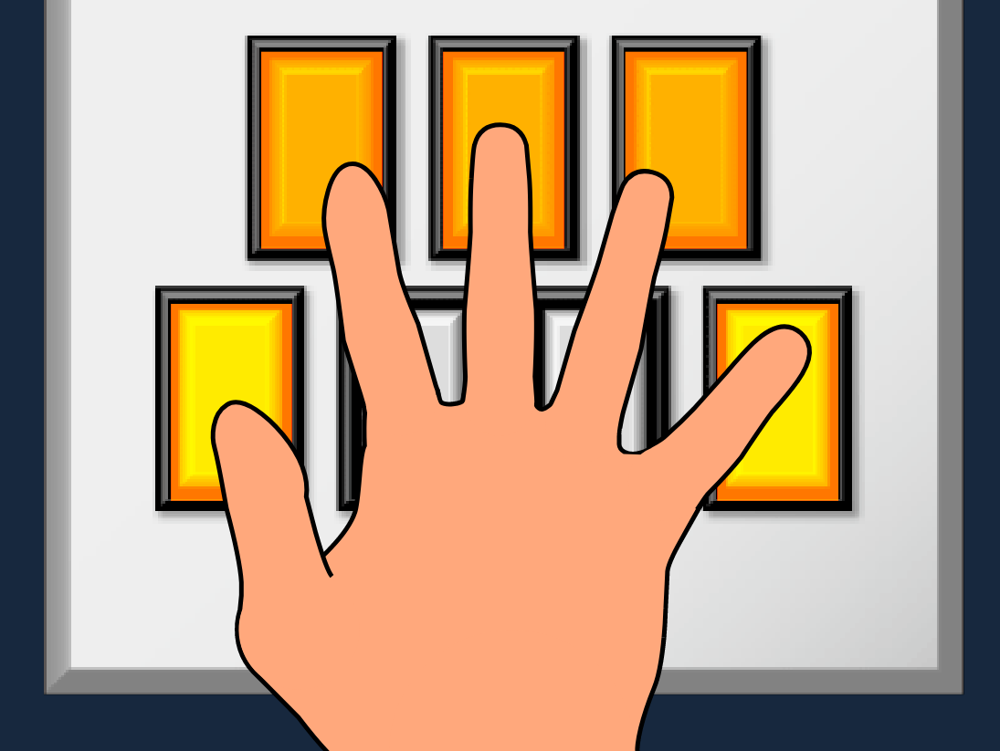
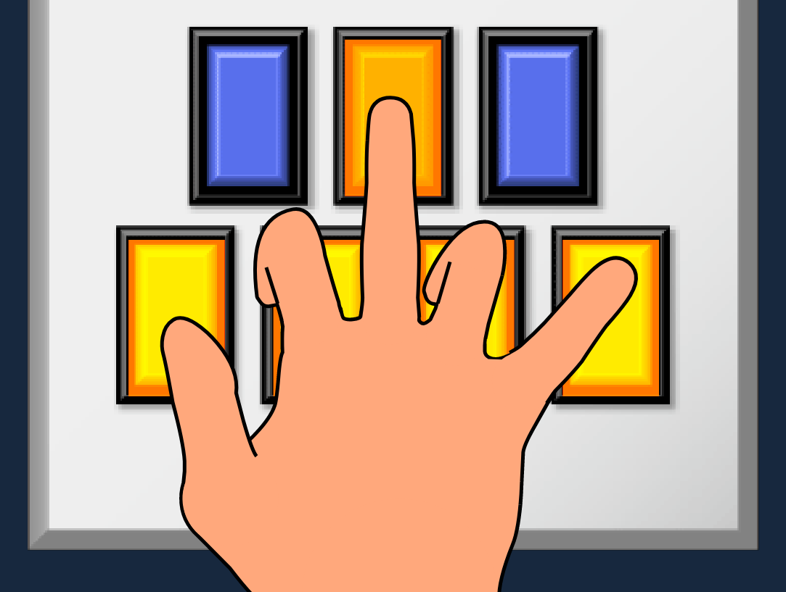
食指和无名指要立起来
这两个就是 DP 的基准手位（基本指法）。最首要的任务就是先把这两种手位练熟。
养成每首曲子开始前都确认一次基准手位的习惯，练着练着就会变成无意识的条件反射。
各手指的负责键位
下图中用黄色标出的手指分工就是基本指法。
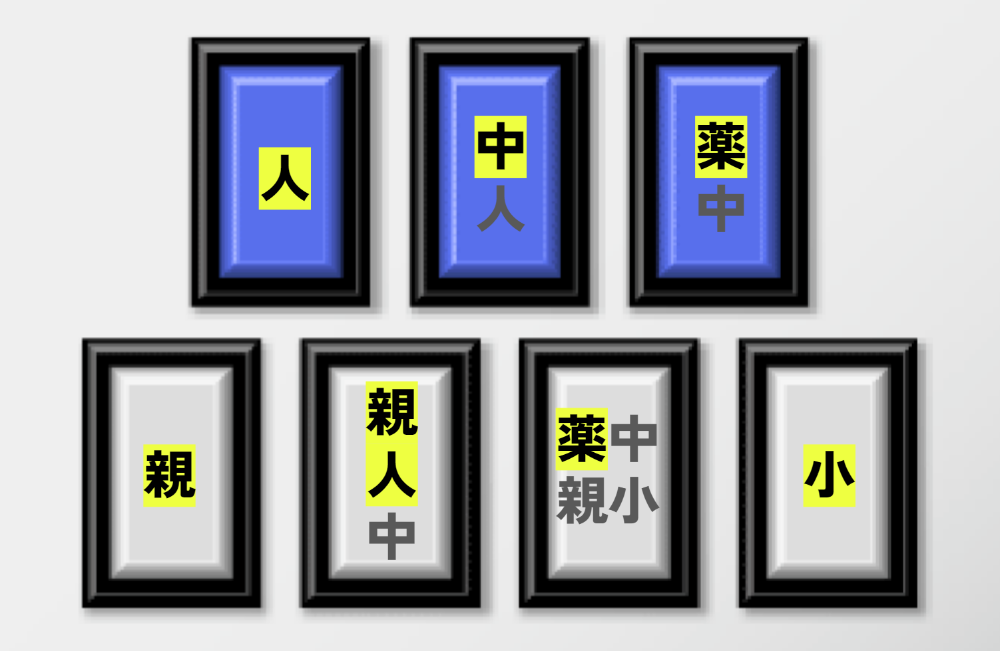
只要掌握了3 键的大拇指与食指切换，以及 5 键的无名指北斗（移动按法/滑指），可以说 DP 的指法你就已经掌握将近九成了。
其余的手指配置（灰色文字）属于上级者向指法。虽然迟早还是学会更好，但一直到 DP 十段左右为止完全不用学也没关系。
后文会提到，我认为在 DP ☆11 及以下阶段，尽量用固定选项去硬打会更有益处，所以太早学上级指法其实也没多少用武之地。
入门方法与选曲建议
在模式选择画面或选曲画面中按下数字小键盘的 3 键，即可在 SP⇔DP 之间切换。
选曲请参考非官方难度表网站
DP 在同一星级文件夹内的实际难度跨度比 SP 还要大，而且翻车要素和地雷谱面也比较多。
因此在 DP 选曲或刷文件夹时，一定要善用难度表网站。它就类似于由玩家投票整理出来的地力表。
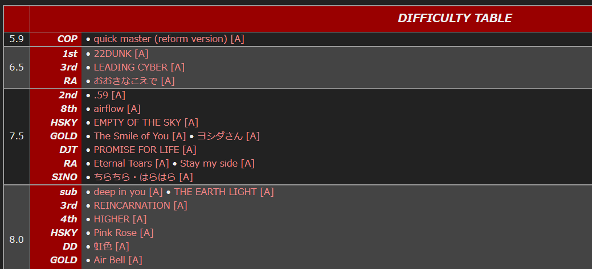
参照难度表，就能高效地挑出最符合自己当前水平的谱面来打。
如果是 SP 皆传玩家或对自己技术比较有信心的人，从 ☆8～9 左右开始直接专攻 ANOTHER 谱面也完全没问题。因为 DP HYPER 里实在有不少写得很随意的谱面……。
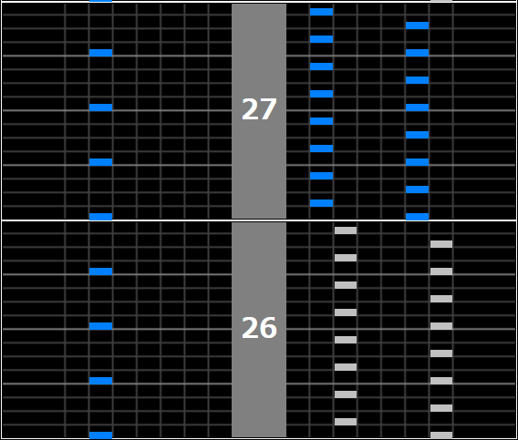
在适应之前避开 HAPPY SKY 之前的老曲
在彻底适应 DP 之前，强烈建议尽量避开 HAPPY SKY 之前的老版本曲目。
HAPPY SKY 之前的 DP 谱面有很多古怪刁钻的配置。尤其是 IIDX 最早期的一些 DP 谱面，当初是按“两个人合作游玩”为前提设计的，所以被称为“无理皿”的配置（比如 1+7+皿 等）司空见惯。
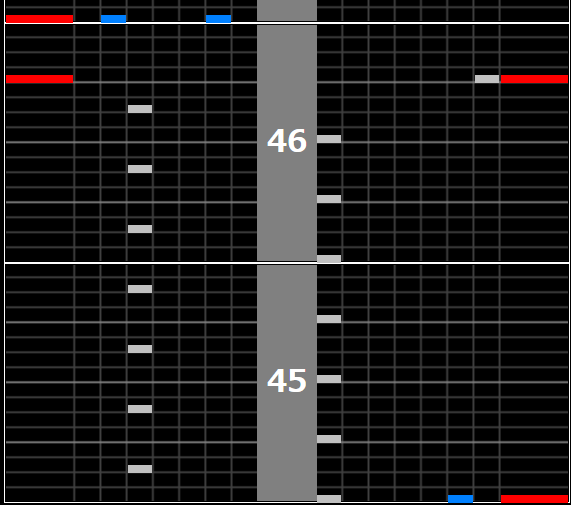
虽然 DistorteD 之后也不是完全没有怪异配置，但比例已经低得多了。
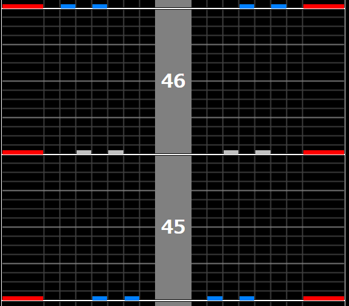
靠着“参考难度表”＋“避开 HAPPY SKY 之前的老曲”，就能开启一段舒心的 DP 之旅。
当然，如果有自己特别喜欢的歌，想打就尽管自由去打。
选项设置与 RANDOM（乱）
绿数字要比 SP 调大一些，留出余量
玩 DP 时的绿数字（NOTES TIME）建议比 SP 稍微调大一点。
推荐先从“SP 绿数字 + 50～100”左右起步，适应后再一点点往下调。作为参考，我身边兼修 SP 和 DP 的玩家，给人的印象大多是设为比 SP 高 20 左右。
白数字（SUB-LENGTH）则普遍比 SP 设得更小（可视区域更广）。因为 DP 的视野相比 SP 横向拉宽了很多，所以纵向也要适当放宽来保持视觉平衡。
作为参考，SP 玩家白数字总和设在 350 左右的较多，而 DP 玩家大多在 200 左右，也有不少人几乎不用挡板。
在挑战 ☆12 之前完全可以不用 RANDOM（乱）
在开始触碰 ☆12 之前，完全不需要使用 RANDOM（乱）选项（当然，刻意拿来当练习手段也是可以的）。
原因在于，DP 与 SP 相比，☆12 上位曲目中难以开启 RANDOM（乱）的谱面要多得多。
DP 对正规系与固定选项的熟练度要求远高于 SP。尤其是如果一直逃避同色楼梯和纯楼梯，到了 ☆12 上位谱面和段位认定中就会吃尽苦头（例如：Confiserie DPA、Elemental Creation DPA 等）。
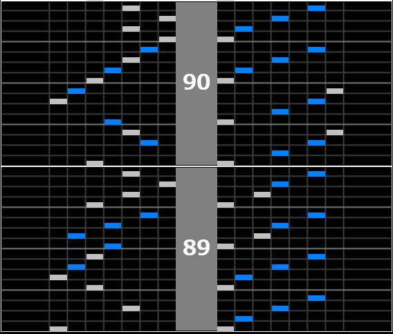
因此在 ☆11 及以下阶段，最推荐只用固定选项（正规・MIRROR・FLIP）的组合来打，专心夯实正规系谱面的基本功。
到了 ☆12 中位以上，也会零星出现推荐开 RANDOM（乱）的谱面。届时再开始练习 RANDOM 和上级者向指法也完全来得及。
关于转盘（皿 / Scratch）
DP 的转盘包含着陆、邻接皿、无理皿等诸多 SP 中没有的要素，因此颇具难度。
搓盘手法与着陆技巧
基本的搓盘手法和 SP 差别不大。
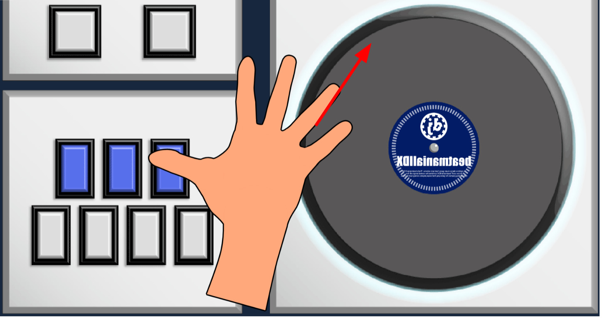
真正难的是搓完盘之后的“着陆”。把搓完转盘后手重新回到键盘按键的动作称作“着陆”。
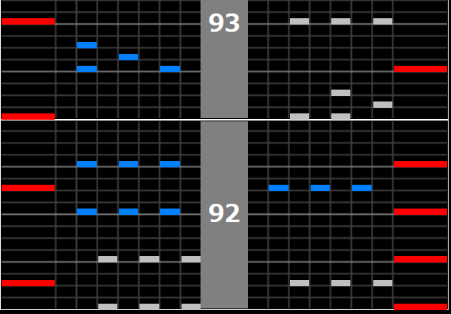
着陆的诀窍有以下 3 点：
- 先以大拇指为锚点着陆
- 尽量去搓转盘靠外侧的边缘
- 尽量把手掌（大拇指）张开
关键在于把作为基准点的大拇指移动距离压到最小。平时练习时要刻意去追求最小幅度的动作。
关于邻接皿与无理皿
这里我们将“靠转盘一侧前 3 个键 + 转盘”称为邻接皿，除此之外的则统称为无理皿。
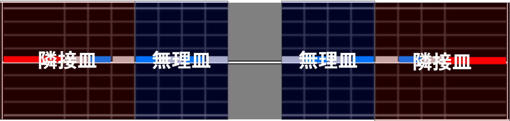
邻接皿（右手侧即 5～7 键 + 转盘）基本都是用大拇指去接键盘。其中 6+皿 因为是 SP 里很少用到的手部动作，很多人会觉得不好按；如果够得着的话，用食指 + 小指来接也完全可以。
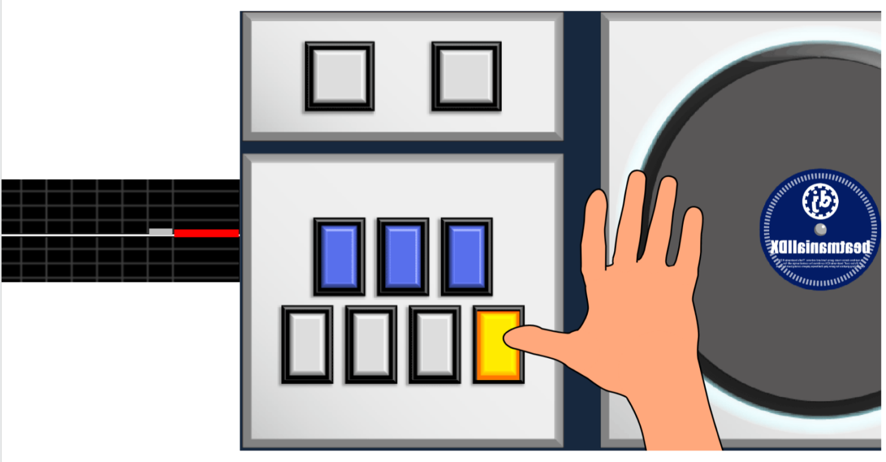
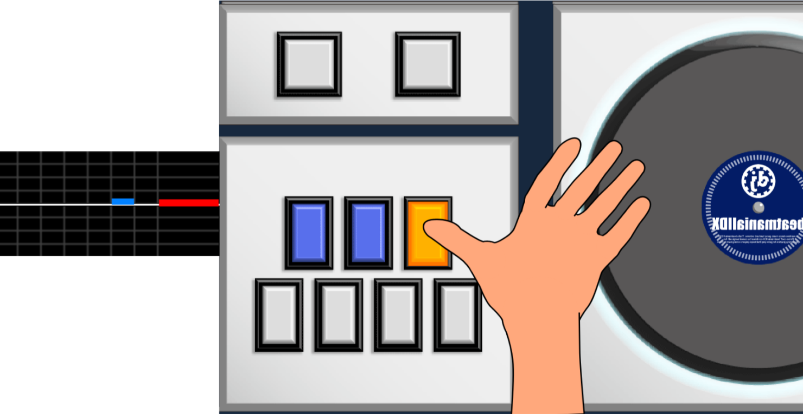
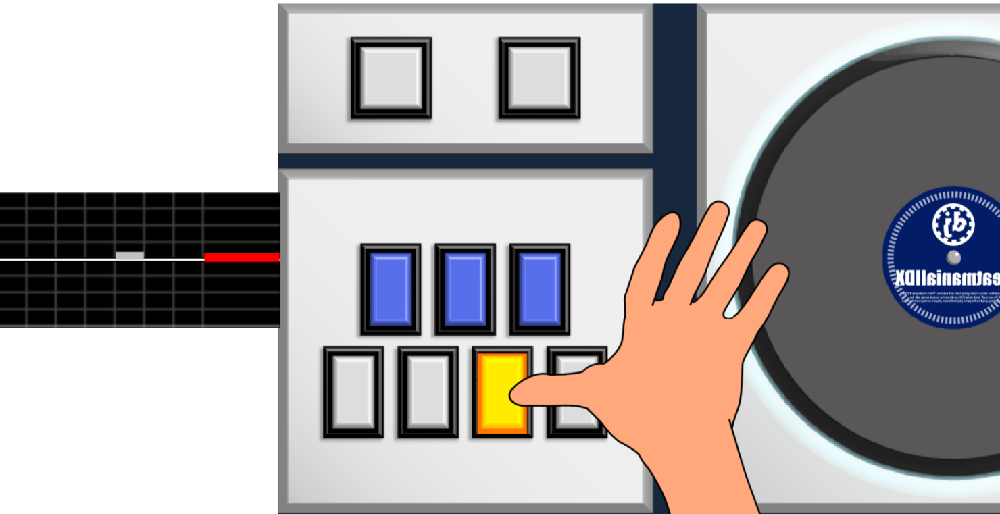
无理皿（泛指单手几乎不可能同时按到的键盘+转盘配置）共有“先键后盘（鍵盤→皿）”和“先盘后键（皿→鍵盤）”两种处理模式，根据无理皿前后的谱面衔接来灵活选用即可。
如果连续出现 2 个及以上无理皿，可以采用“键→盘→盘→键”或“盘→键→键→盘”的顺序去接，这样手部的来回移动量会更小。
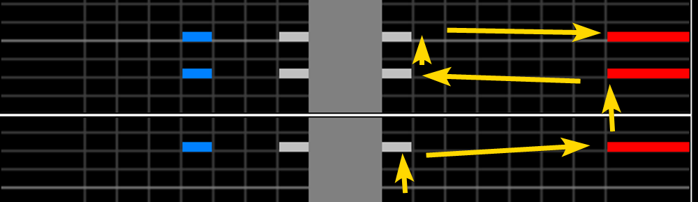
上级者向指法（运指）
其实 DP 只要掌握图中黄色标出的指法就基本够用了，甚至有人光靠基础指法就达成了 DP 全白（全 HARD）。
真正需要用到上级者向指法的场合，通常是低音（1 键）伴随 5/6 键交织的乱打，以及频繁出现三押的 ☆12 中位以后。
开始学习这些指法的时机，等到 DP 十段之后也完全足够。
中6
中6 是指用中指按 6 键、无名指按 5 键的指法，4 键则交由食指补位。
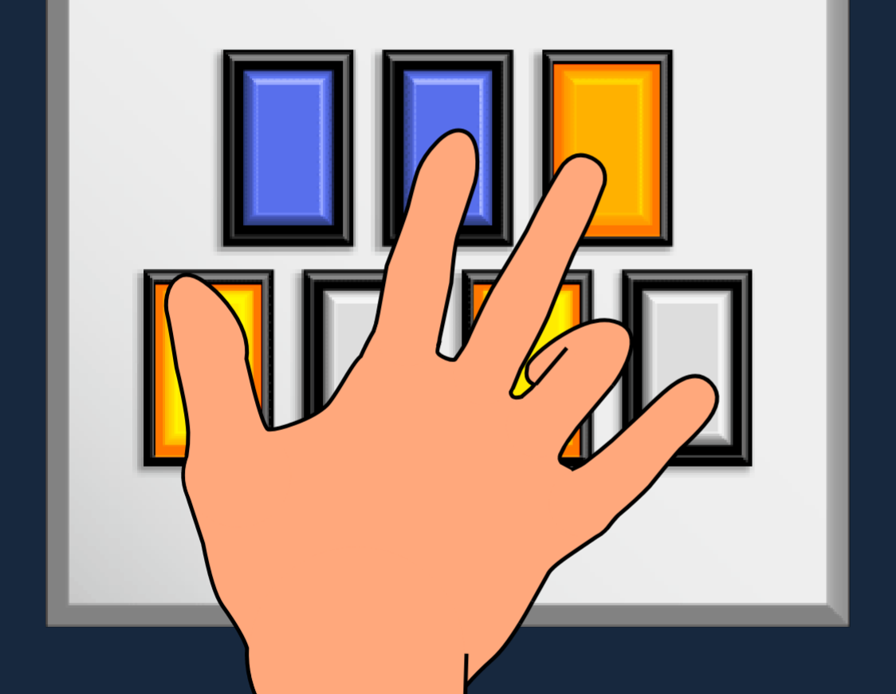
它的特点是非常擅长应对涉及 5/6 键的乱打、楼梯和同时押。
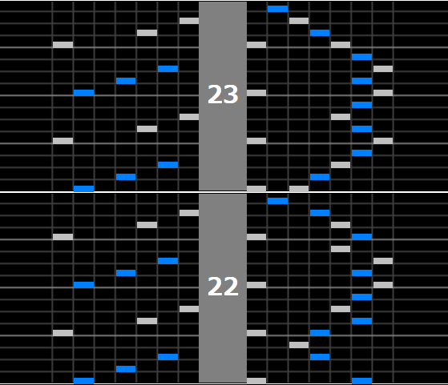
在这种大拇指被 1 键底鼓锁死的乱打中，中6 堪称必备
相比下文提到的中5，中6 的手指弯曲姿态更自然顺手。在所有上级者向指法中，可以说它是最值得优先掌握的指法。
按法诀窍是把手腕稍微向外侧转一点，按起来会轻松很多。
中5
中5 是指用中指去按 5 键的指法。
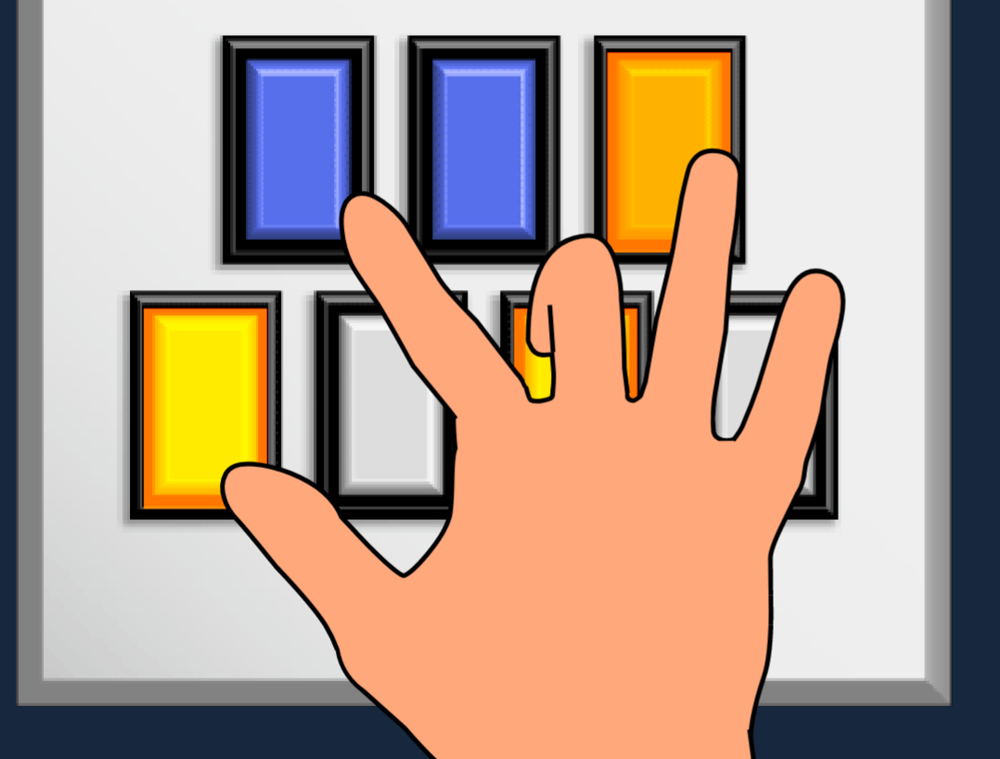
与中6 一样，它也是擅长应对 5/6 键相关配置的指法。
由于除中指外的其他手指都维持在基准手位，直觉上比较容易学会，但中指弯下来实在太过别扭难受，我个人完全不用。
中6 和中5 挑一个对自己来说更顺手的学会就行。
拇5（親5）
拇5（大拇指按 5 键）在纯楼梯等段落里经常会用到，在简单的 56 交互中也会使用这种指法。
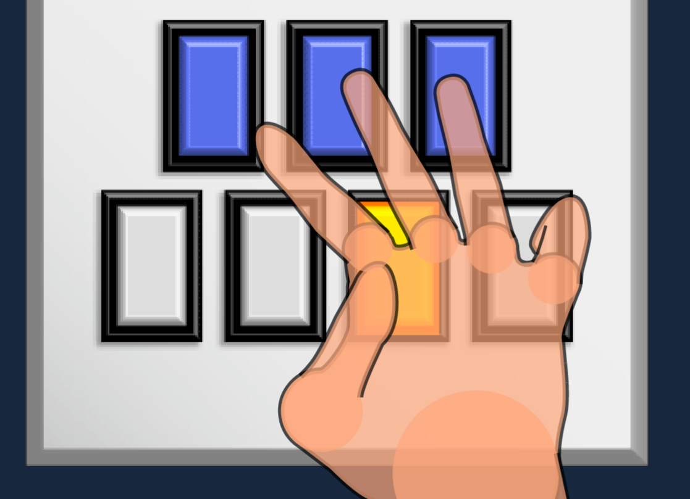
特别是从小指一侧起手的楼梯，与其硬着头皮去用中6 或中5，不如放开手脚多依赖大拇指，打起来会既轻松又稳定。
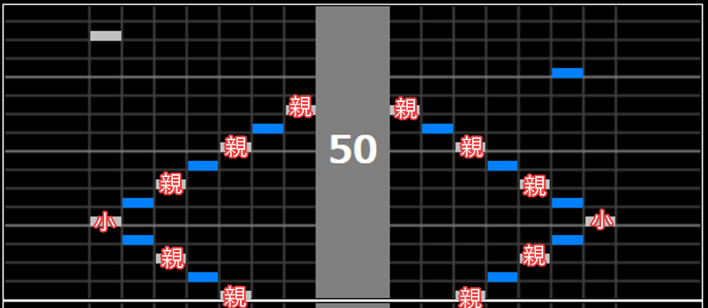
小5
小5（小指按 5 键）的使用场景极其有限，但也确实有能派上用场的时候。
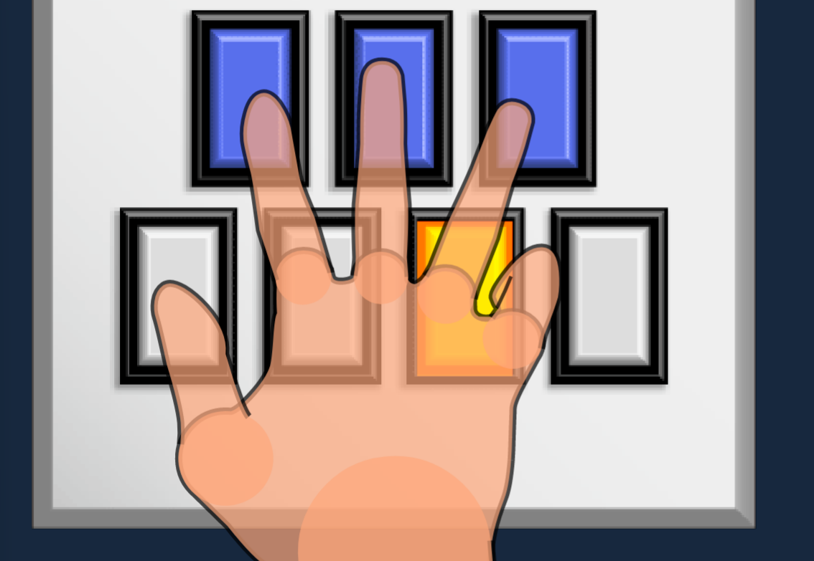
例如 1256 同时押，从基准手位出发移动量很小，非常轻松。
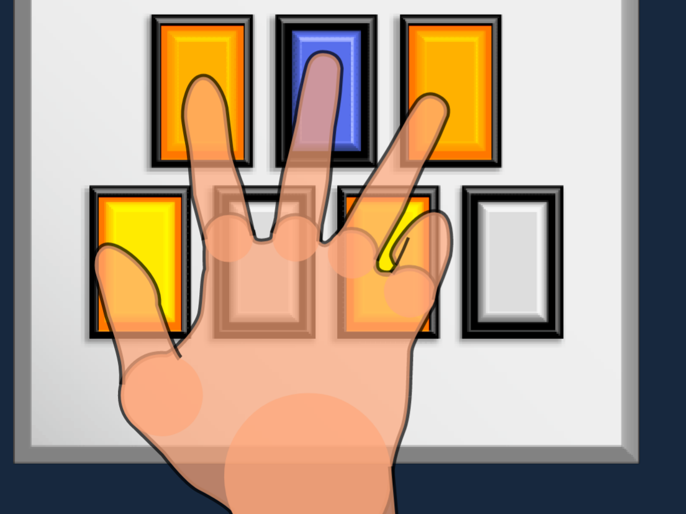
2356 也只需要把大拇指和小指往里一收就能按到，非常简单。
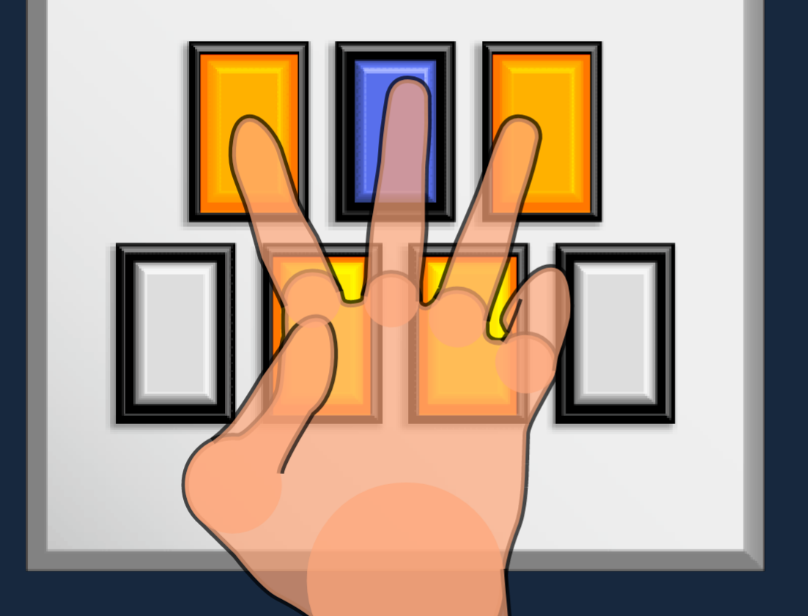
如果 2456 能用小5 接住，大拇指就能空出来，感觉也很不错。
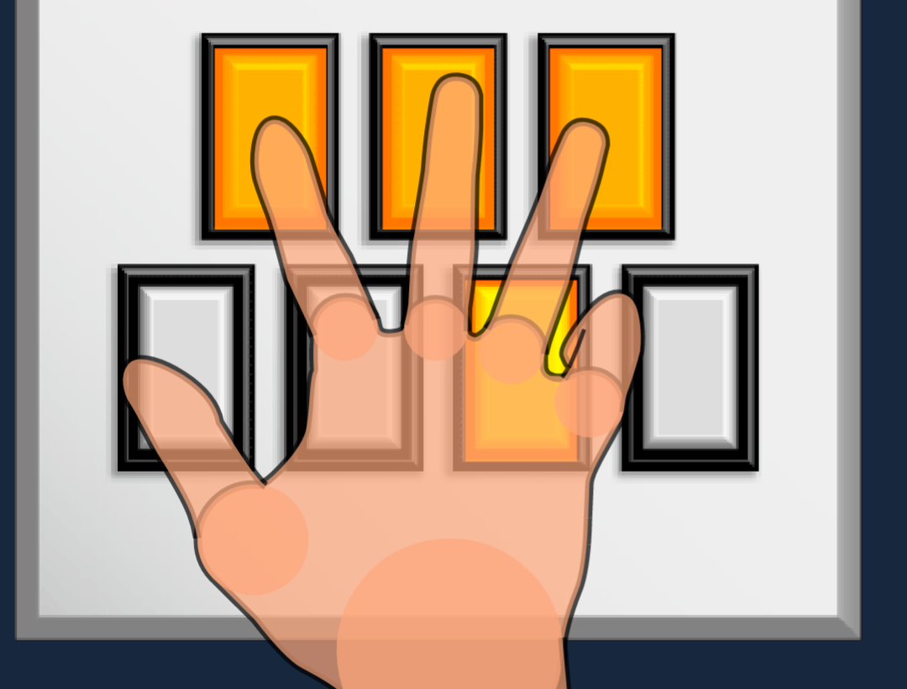
像这样，虽然只要会中6 或中5 就并非非学不可，但确实存在用小5 更好按的键型，大家不妨多尝试看看。
关于单手游玩（片手）
关于 DP 与单手游玩（片手）之间的关系，圈内各处一直众说纷纭。
我自己左手单手和右手单手都练到过九段，但先说结论：我认为练 DP 并不需要去练单手模式。
理由如下：
- 如果缺乏高于单手能力的 DP 读谱能力，光有单手力也发挥不出来
- DP 和单手模式的手部姿势略有差异
- 直接在 DP 里打偏向某一侧的谱面更加贴近实战
- 坚持练单手很难维持动力与积极性
- 还有 DBM 和 DBR 可以练
并不是说练单手毫无意义，但单从提升 DP 水平的角度来看，把花在单手上的时间和精力集中投入到 DP 或 DBR 上，效果肯定更好。
唯一的例外是上级者向指法迟迟练不会，或者刚开始学中6、中5 的起步阶段，这时借用单手来练一练还是不错的。我记得自己当初学中6 时，也是先从单手开始练的。
特别是掌握中6，用 5KEY 模式把指法锁死来练是最快上手的方法。
虽然现行街机版里应该没有这个选项了，但 INFINITAS 里有 5KEY 选项，被中6 难住的小伙伴可以试一试。
关于 DBM 与 DBR
简单来说，DBM 和 DBR 就是让 SP 的谱面在左右两侧同时落下。两者都是非常有助于提升 DP 地力的选项。
不过由于属于偏进阶的玩法，不感兴趣的话不练也无所谓，哪怕等考完皆传再碰也不迟。
想玩 DBM・DBR，首先要在选曲画面按数字小键盘的 7 键开启“BATTLE”。在此基础上，给单侧（通常是 1P）挂上 MIRROR（镜像）就是 DBM，给两侧都挂上 RANDOM（乱）就是 DBR。
如果不加其他设置，转盘音符也会照常落下，所以千万别忘了开启 AUTO SCRATCH（当然也有带盘打的“有皿 DBM / 有皿 DBR”玩法）。
另外，即使开了 AUTO SCRATCH，屏幕上飘着绿色的自动转盘音符也挺碍眼的，建议在详细选项中关闭“オートスクラッチ表示（自动转盘显示）”。
DBM 非常适合强化非惯用手
DBM 是非常推荐用来补强非惯用手的练习方法。
因为 DBM 会生成左右完全对称的配置，正好可以训练让右手和左手做出同等水平的动作。
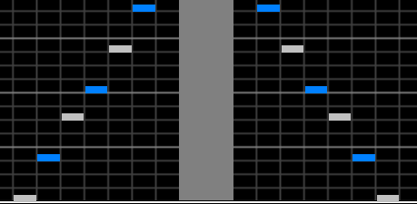
练习时把读谱重心放在惯用手那一侧的轨道上，让非惯用手去同步描摹惯用手的动作，这样效果非常显著。
DBR 非常适合强化读谱能力
DBR 是非常推荐用来强化读谱能力的练习方法。
由于左右两侧各自会落下完全不同的 RANDOM 配置 SP 谱面，其难度上限几乎深不见底。
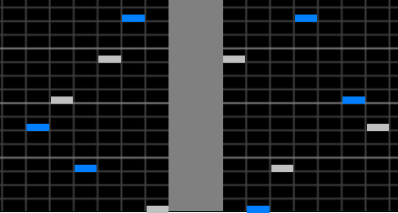
不过，DBR 相对来说更偏向于点亮新通关灯开始陷入瓶颈的上级玩家所用的练习法。
如今 DP ☆12 的谱面数量已经相当丰富，在真正遇到瓶颈之前，还是应该优先多打正常的 DP 谱面。说句极端的话，如果只顾着打 DBR，你就只会擅长打 DBR（以及和它类似的 DP 谱面）。
诸如混拍（混フレ，左右手节奏不同）、转盘以及单侧偏重型谱面等，DP 中有大量靠 DBR 练不到的要素。
总结
以上就是面向已经有一定 IIDX 基础的玩家的 DP 入门解说。
- 初期避开 HAPPY SKY 之前的老谱面（粪谱太多）
- ☆11 以下不必使用 RANDOM（打好正规系基础非常重要）
- 中6 等十段之后再学就来得及（太早学也没什么上场机会）
- 不练单手模式也没关系
如果让我自己再从零开始学 DP，大概也会重点注意这几点。
虽然 DP 因为上手门槛较高，玩家人数比 SP 少、容易给人“很难”的印象，但一旦跨过入门期，它的玩法和谱面广度比 SP 更宽广，非常有意思。
我认识的人里，有成天只打 DBR 的，有只打皿曲的，甚至还有单手打 DP 的奇人。
就我个人而言，DP 用起手来比 SP 更自然、不容易累，而且需要同时调动更多手指，对健脑防衰老也很有帮助，目前退休后的养老主力模式还是 DP 占了上风 👴
💬 读者评论与作者答疑（9 组对话）